UDN
Search public documentation:
AppleiOSProvisioningPortalKR
English Translation
日本語訳
中国翻译
Interested in the Unreal Engine?
Visit the Unreal Technology site.
Looking for jobs and company info?
Check out the Epic games site.
Questions about support via UDN?
Contact the UDN Staff
日本語訳
中国翻译
Interested in the Unreal Engine?
Visit the Unreal Technology site.
Looking for jobs and company info?
Check out the Epic games site.
Questions about support via UDN?
Contact the UDN Staff
모바일 홈 > iOS Provisioning 개요 > iOS Provisioning Portal 개요
iOS Provisioning Portal 개요
문서 변경내역: Jeff Wilson 작성. 홍성진 번역.
개요
iOS Provisioning Portal 은 Provisioning Assistant 로 수행되는 자동 구성과는 달리 좀 더 고급 특화된 Provisioning 구성이 가능한 툴이 포함되어 있습니다. 여기서 여러 디바이스의 추가, 명시적 번들 식별자 구성, Provisioning 프로파일 변경, 기타 등등의 작업이 가능합니다. 여기서는 언리얼로 iOS 게임을 만드는 개발자에 적용되는 공통된 사항을 일부 다뤄보도록 하겠습니다.
여기서 여러 디바이스의 추가, 명시적 번들 식별자 구성, Provisioning 프로파일 변경, 기타 등등의 작업이 가능합니다. 여기서는 언리얼로 iOS 게임을 만드는 개발자에 적용되는 공통된 사항을 일부 다뤄보도록 하겠습니다.
Certificate
iOS Provisioning Portal 의 Certificates 부분에는 현재 Development Certificate 가 표시됩니다. iOS 디바이스용 어플리케이션을 만들기 위해서는 Development Certificate 가 필요합니다. 각 개발자에게는 한 번에 하나의 Development Certificate 만이 허용됩니다. 이 Certificate 는 여기서 내려받거나 폐기, 즉 없애버릴 수 있습니다. 현재 개발자 프로파일에 관련된 Development Certificate 를 갖고 있지 않은 경우, 여기서 Development Certificate 를 요청할 수 있습니다.Development
Development Certificate 요청하기
Development Certificate 를 새로 만들려면, Certificate 요청 파일(.csr)이 필요합니다.-
새 Development Certificate 를 요청하려면, Certificates 홈 페이지에 있는 Development 탭에서
 버튼을 클릭하십시오. Create iOS Development Certificate 페이지로 이동됩니다.
버튼을 클릭하십시오. Create iOS Development Certificate 페이지로 이동됩니다.

-
파일 입력 필드를 사용하여 Certificate 요청 파일(.csr)을 찾은 다음 버튼을 클릭하여 요청을 제출합니다. Certificates 홈 페이지의 Development 탭에 Certificate 요청이 보류상태(pending)로 나열됩니다.

-
Certificates 링크를 클릭하여 Certificates 홈 페이지의 Development 탭을 다시 로드합니다. Certificate 가 Issued 로 표시될 것입니다.
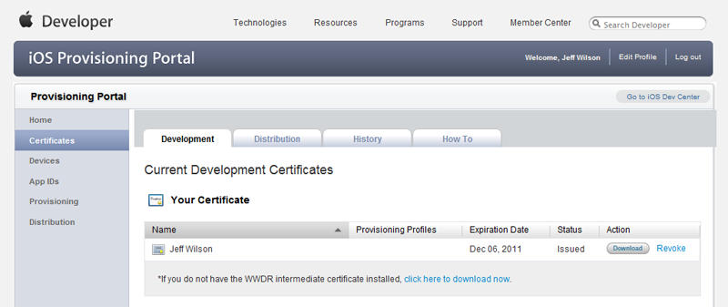
Distribution
Distribution Certificate 요청하기
Distribution Certificate 를 새로 만들기 위해서는, Certificate 요청 파일(.csr)이 필요합니다.-
새 Distribution Certificate 를 요청하려면, Certificates 홈 페이지의 Distribution 탭에 있는 버튼을 클릭하십시오. Create iOS Distribution Certificate 페이지로 이동됩니다.
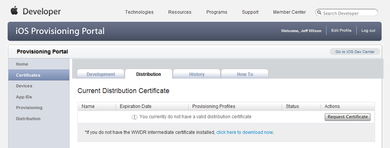
-
파일 입력 필드를 사용하여 Certificate 요청 파일(.csr)을 찾습니다. 버튼을 클릭하여 요청을 제출합니다. Certificates 홈 페이지의 Distribution 탭에 Certificate 요청이 보류상태(pending)로 나열됩니다.
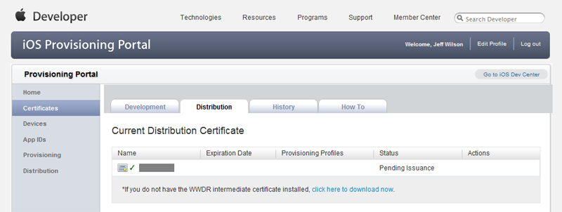
-
Certificates 링크를 클릭하여 Certificates 홈 페이지의 Distribution 탭을 다시 불러옵니다. Certificate 가 Issued 로 표시될 것입니다.
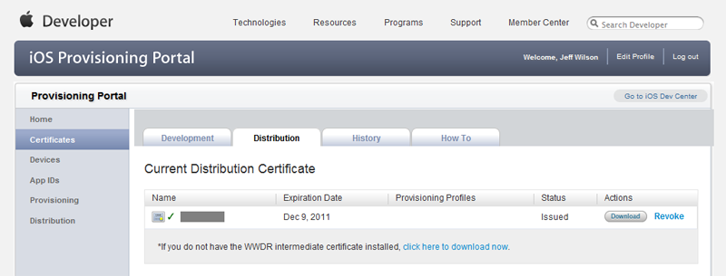
디바이스
iOS Provisioning Portal 의 Devices 부분에는 현재 귀하의 개발자 프로파일에 관련된 iOS 디바이스가 전부 나열됩니다. 여기서 Provisioning 프로파일 관련 디바이스를 추가, 수정, 제거할 수 있습니다.
디바이스 추가하기
디바이스를 추가시키면 Provisioning 프로파일에 하나 이상의 디바이스를 할당할 수 있습니다. 이렇게 하여 아이패드, 아이폰, 아이팟 터치 등 여러 디바이스에서 시험해 보면서 대상으로 삼는 모든 플랫폼에서 제대로 작동하나 확인해 볼 수 있습니다.-
새 디바이스의 추가는, Devices 홈 페이지의
 버튼을 클릭합니다. Add Devices 페이지로 이동됩니다.
버튼을 클릭합니다. Add Devices 페이지로 이동됩니다.
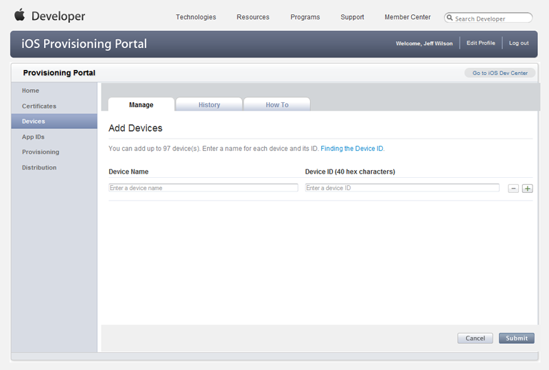
-
Add Devices 페이지에서 다음 정보를 입력합니다:
- Device Name 디바이스 이름 - 특정 디바이스의 식별에 사용될 표시명입니다.
- Device ID 디바이스 ID - iOS 디바이스의 고유 ID입니다. 맥에서 Xcode를 통해 ID 위치를 알아내는 방법이 있습니다만, 또다른 방법으로는 App Store 에서 iDevice Info 라는 앱을 사용하여 Device ID를 찾는 것이 있습니다. 심지어 ID를 이메일로 보내주기까지 하므로, 편하게 복사해 붙여넣을 수 있습니다.
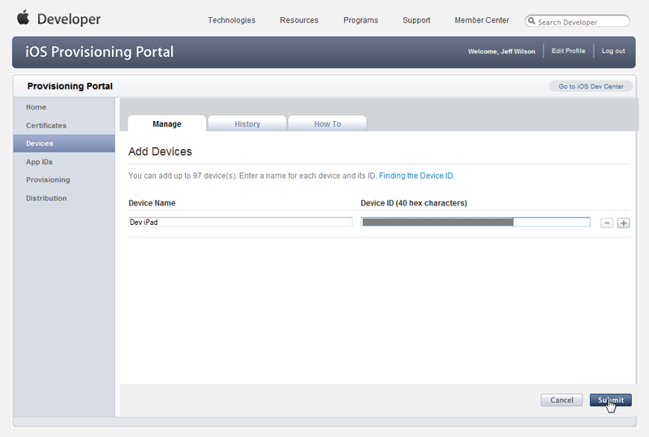
-
버튼을 클릭하여 새 디바이스를 추가합니다. Devices 홈 페이지에 기존에 추가된 디바이스와 함께 새로운 디바이스가 나열될 것입니다.

App ID
iOS Provisioning Portal 의 App IDs 부분에는 개발자 프로파일에 관련된 기존 App ID 가 전부 나열됩니다. 추가로 App IDs 부분을 통해서도 App ID 의 생성 및 환경설정이 가능합니다.App ID 생성하기
App ID 를 수동으로 생성하면 App ID 에 Game Center, In-App Purchase, Apple Push Notification Service 와의 통신 등에 필요한 명시적 번들 식별자도 같이 구성할 수 있습니다.-
새 App ID 를 만들려면, App IDs 홈 페이지의
 버튼을 클릭합니다. Create App ID 로 이동됩니다. 예전에 만들어 둔 App ID 가 있으면 이 페이지에 표시됩니다.
버튼을 클릭합니다. Create App ID 로 이동됩니다. 예전에 만들어 둔 App ID 가 있으면 이 페이지에 표시됩니다.

-
다음 정보를 입력하십시오:
- Description 설명 - iOS Provisioning Portal 에서 App ID 를 식별하는 데 사용되는 표시명입니다.
- Bundle Seed ID 번들 시드 ID - 자동으로 생성되는 고유 식별자입니다. Generate New 를 선택하면 새 ID를 생성할 수 있습니다.
- Bundle Identifier 번들 식별자 - 새 App ID 에 대한 고유 식별자입니다. 와일드카드(&42;)가 될 수는 있으나, Game Center, In-App Purchase, Apple Push Notification Service 등을 활용하려면 명시적으로 설정해 주어야 합니다. 명시적 번들 식별자에 추천할 만한 포맷은, 도메인 이름을 거꾸로 하는 정도가 좋습니다. (예:
com.EpicGames.UDNiOSGame)
-
버튼을 클릭하여 새 App ID 를 만듭니다. App IDs 홈 페이지에 새 App ID 가 보일 것입니다.
Provisioning
iOS Provisioning Portal 의 Provisioning 부분에는 개발자 프로파일에 관련된 기존 Provisioning 프로파일이 표시됩니다. 새 프로파일의 생성은 물론 기존 프로파일의 확인, 제거, 수정 역시도 가능합니다.
개발
Development 프로파일 만들기
새로운 Development Provisioning 프로파일은 Development 탭의 Provisioning 부분 안에서 직접 만들 수 있습니다.-
새 Development Provisioning 프로파일을 만들려면, Provisioning 홈 페이지의 Development 탭에서
 버튼을 클릭합니다. Create iOS Development Provisioning Profile 페이지로 이동됩니다.
버튼을 클릭합니다. Create iOS Development Provisioning Profile 페이지로 이동됩니다.
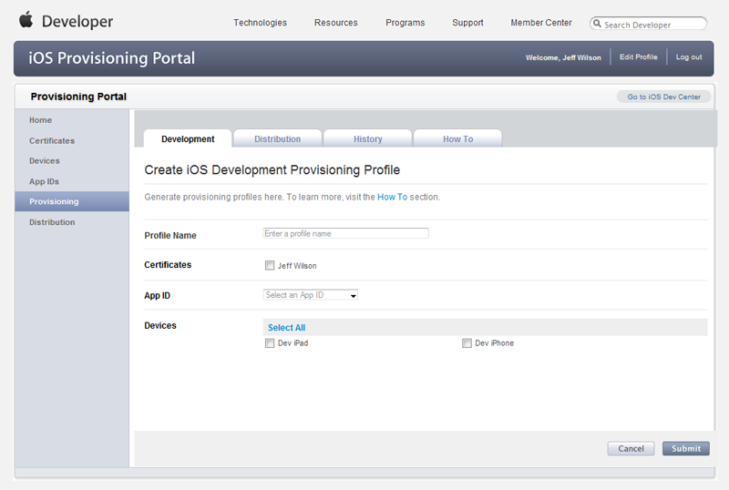
-
프로파일 정보를 채워 넣습니다:
- Profile Name 프로파일 이름 - iOS Provisioning Portal 에서 프로파일의 식별에 사용할 표시명입니다.
- Certificates Certificate - 이 프로파일에 연관시킬 Certificate 옆의 박스를 체크합니다.
- App ID - 기존 App ID 중에서 아무거나 이 프로파일에 연관시킬 것을 선택합니다.
- Devices 디바이스 - 이 프로파일에 연관시킬 디바이스 옆의 박스를 모두 체크합니다.
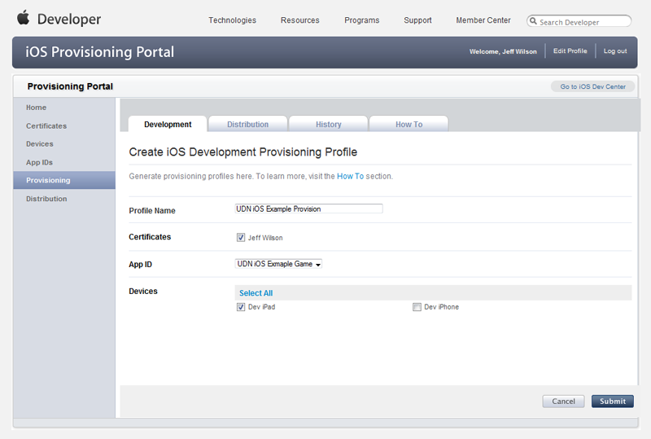
-
버튼을 클릭하여 새 프로파일을 제출합니다. Provisioning 홈 페이지의 Development 탭으로 되돌아가며, 새 프로파일이 Pending (미결) 상태로 표시되어 있을 것입니다.

-
Provisioning 홈 페이지의 Development 탭을 다시 로드하면 pending(미결) 프로파일이 Active (활성) 상태로 표시될 것입니다.

Development 프로파일 변경하기
기존 Development Provisioning 프로파일은 Provisioning 부분의 Development 탭에서 수정할 수 있습니다. 여기서 프로파일의 이름변경, 프로파일에 연관된 App ID 와 디바이스 선택, 프로파일에 연관된 Certificate 설정 등의 작업을 할 수 있습니다.-
기존 Development 프로파일을 변경하려면, 프로파일 목록에서 해당 프로파일의 Edit 링크를 클릭합니다.
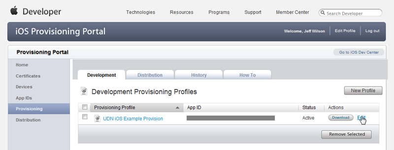
그리고 나타나는 메뉴에서 Modify 링크를 클릭합니다.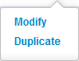
Modify iOS Development Provisioning Profile 페이지로 이동됩니다. -
프로파일의 정보를 수정합니다:
- Profile Name 프로파일 이름 - iOS Provisioning Portal 에서 프로파일의 식별에 사용되는 표시명입니다.
- Certificates Certificate - 이 프로파일에 연관시킬 Certificate 옆의 박스를 체크합니다.
- App ID - 기존 App ID 중에서 이 프로파일에 연관시킬 것을 선택합니다.
- Devices 디바이스 - 이 프로파일에 연관시킬 디바이스 옆의 박스를 모두 체크합니다.
-
버튼을 클릭하여 프로파일로 변경사항을 저장합니다. Provisioning 홈 페이지의 Development 탭으로 되돌아가며, 변경된 프로파일은 pending (미결) 상태로 표시됩니다.
-
Provisioning 홈 페이지의 Development 탭을 다시 로드하면 미결 프로파일이 Active (활성) 상태로 표시됩니다.
배포
배포 프로파일 만들기
Distribution 탭 Provisioning 부분 안에서 직접 배포 Provisioning 프로파일을 새로 만들 수 있습니다.-
새 배포 Provisioning 프로파일을 만들려면, Provisioning 홈 페이지의 Distribution 탭에 있는 버튼을 클릭하십시오. Create iOS Development Provisioning Profile 페이지로 이동됩니다.
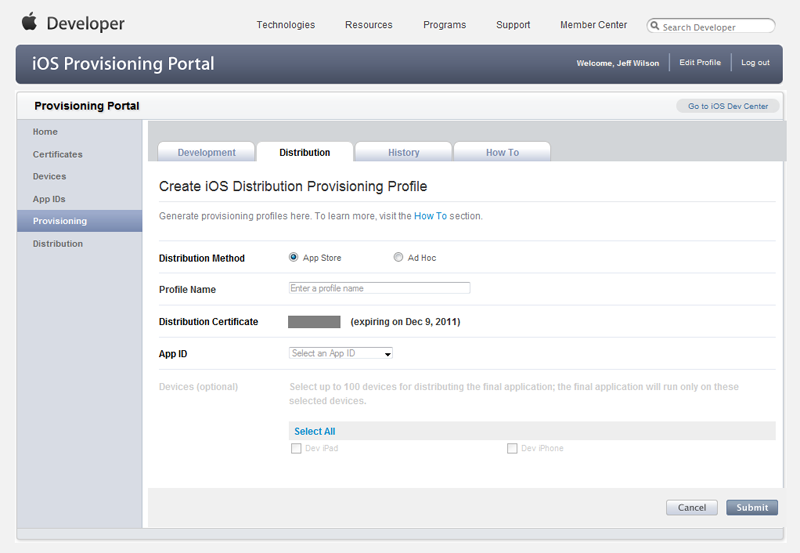
-
프로파일 정보를 채워 넣습니다:
- Distribution Method 배포 방법 - 원하는 배포 방법을 선택합니다. App Store 를 통해 배포하려는 경우 App Store 를 선택합니다. 내부 어플리케이션 등 디바이스로 직접 앱을 배포하려는 경우 Ad Hoc 을 선택합니다.
- Profile Name 프로파일 이름 - iOS Provisioning Portal 에서 프로파일의 식별에 사용되는 표시명입니다.
- Distribution Certificates Distribution Certificate - Distribution Certificate 를 나열해야 합니다. 없는 경우 Distribution Certificate 부분을 참고하시기 바랍니다.
- App ID - 기존 App ID 중에서 이 프로파일에 연관시킬 것을 선택합니다.
- Devices 디바이스 - 이 프로파일에 연관시켜야 하는 디바이스 옆의 박스를 전부 체크하십시오. 주: Ad Hoc 배포의 경우에만 켜집니다.
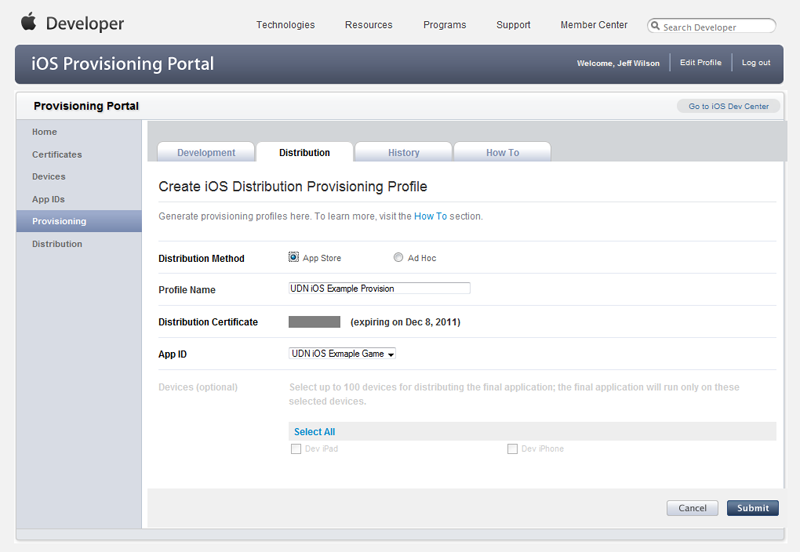
-
버튼을 클릭하여 새 프로파일을 제출합니다. Provisioning 홈 페이지의 Distribution 탭으로 되돌아가며, 새 프로파일은 Pending (미정) 상태로 표시될 것입니다.
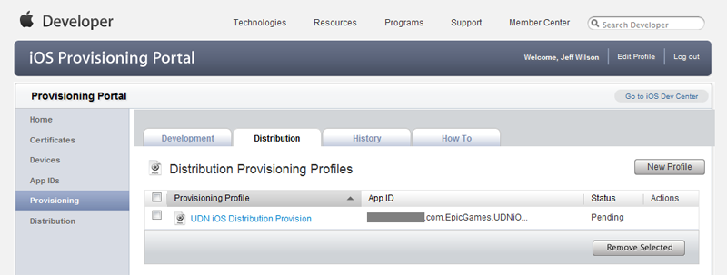
-
Provisioning 홈 페이지의 Distribution 탭을 다시 로드하면 미결 프로파일이 Active (활성) 상태로 표시될 것입니다.

배포 프로파일 변경하기
기존 배포 Provisioning 프로파일은 Provisioning 부분의 Distribution 탭에서 수정할 수 있습니다. 여기서 프로파일의 배포 방법 선택, 프로파일 이름변경, 프로파일에 연관된 App ID 선택, 프로파일에 연관된 디바이스 선택 등의 작업을 할 수 있습니다.-
기존 배포 프로파일을 변경하려면, 프로파일 목록에서 해당 프로파일의 Edit 링크를 클릭합니다.
 그리고 나타나는 메뉴에서 Modify 링크를 클릭합니다.
Modify iOS Development Provisioning Profile 페이지로 이동됩니다.
그리고 나타나는 메뉴에서 Modify 링크를 클릭합니다.
Modify iOS Development Provisioning Profile 페이지로 이동됩니다.
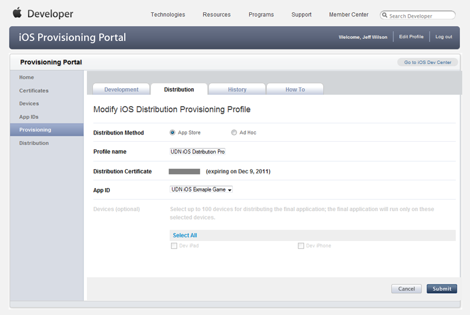
-
프로파일 정보를 변경합니다:
- Distribution Method 배포 방법 - 원하는 배포 방법을 선택합니다. App Store 를 통해 배포하려는 경우 App Store 를 선택합니다. 내부 어플리케이션 등 디바이스로 직접 앱을 배포하려는 경우 Ad Hoc 을 선택합니다.
- Profile Name 프로파일 이름 - iOS Provisioning Portal 에서 프로파일의 식별에 사용되는 표시명입니다.
- Distribution Certificates Distribution Certificate - Distribution Certificate 를 나열해야 합니다. 없는 경우 Distribution Certificate 부분을 참고하시기 바랍니다.
- App ID - 기존 App ID 중에서 이 프로파일에 연관시킬 것을 선택합니다.
- Devices 디바이스 - 이 프로파일에 연관시켜야 하는 디바이스 옆의 박스를 전부 체크하십시오. 주: Ad Hoc 배포의 경우에만 켜집니다.
-
버튼을 클릭하여 변경사항을 프로파일에 저장합니다. Provisioning 홈 페이지의 Distribution 탭으로 되돌아가며, 변경한 프로파일은 pending (미결) 상태로 표시됩니다.
-
Provisioning 홈 페이지의 Distribution 탭을 다시 로드하면 미결 프로파일이 Active (활성) 상태가 됩니다.